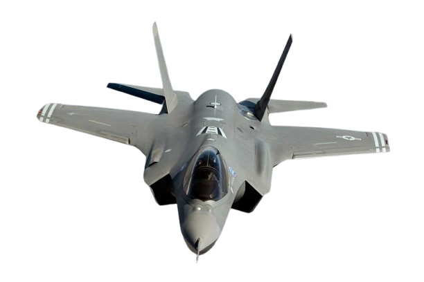
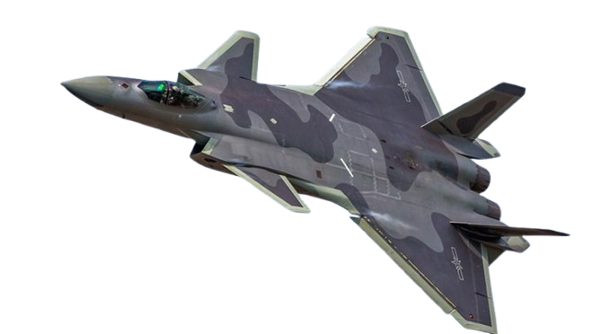
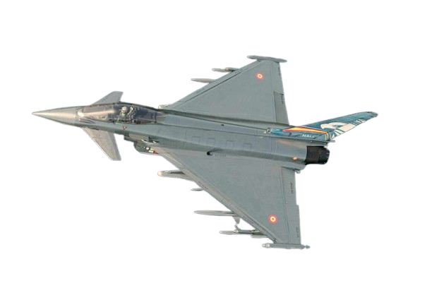
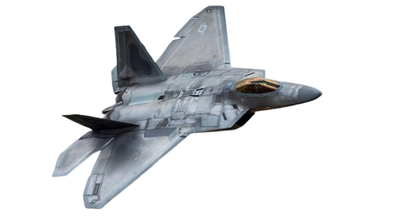
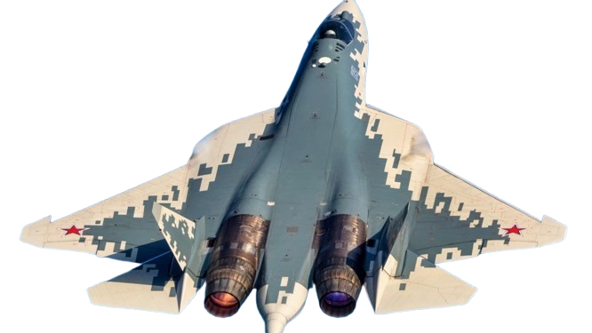

click para
reproducir
audio

El F-35 Lightning II es un proyecto estadounidense iniciado en los años 90 bajo el programa Joint Strike Fighter (JSF), diseñado para reemplazar múltiples cazas en uso, como el F-16 y el F/A-18. El modelo X-35 de Lockheed Martin ganó una competencia contra Boeing en 2001 para convertirse en el F-35. Entró en servicio operativo en 2015 con el Cuerpo de Marines de EE.UU. La aeronave cuenta con variantes para despegue y aterrizaje convencional (F-35A), vertical (F-35B) y desde portaaviones (F-35C).

Tipo: Caza de quinta generación, furtivo, polivalente.
Medidas:
Longitud: 15.7 m (F-35A).
Envergadura: 10.7 m.
Altura: 4.33 m.
Tecnología:
Radar AESA (Active Electronically Scanned Array).
Sistema de fusión de sensores para conciencia situacional avanzada.
Capacidad de despegue y aterrizaje vertical (F-35B).
Diseño furtivo (stealth) con baja detectabilidad radar.
Armamento:
Interno: Hasta 4 misiles o bombas en bodegas internas.
Externo: Hasta 6 puntos de anclaje adicionales.
Tipos: AMRAAM, JDAM, SDB, misiles aire-tierra y aire-aire.
Cañón: GAU-22/A de 25 mm (F-35A).
Especificaciones:
Velocidad máxima: Mach 1.6 (~1,975 km/h).
Alcance: ~2,200 km.
Techo operativo: 15,240 m.
Motor: Pratt & Whitney F135.
País:Estados Unidos
País:Estados Unidos, pero es un programa multinacional con socios como Reino Unido, Italia y Australia
Fuentes:[F35 Official History](https://www.f35.com/f35/about/history.html) y
[Wikipedia F-35 Lightning II](https://en.wikipedia.org/wiki/Lockheed_Martin_F-35_Lightning_II).
Desarrollado por China, el J-20 es su primer caza de quinta generación. El proyecto comenzó en la década de 1990 y realizó su primer vuelo en 2011. Es un hito en la tecnología militar china, diseñado para competir con aviones como el F-22 y F-35. Su diseño inicial se inspiró en tecnologías occidentales y fue mejorado con desarrollos nacionales.

Tipo: Caza de quinta generación furtivo, desarrollado por China.
Medidas:
Longitud: 20.3 m.
Envergadura: 13.5 m.
Altura: ~4.45 m.
Tecnología:
Radar AESA desarrollado por China.
Diseño furtivo con materiales compuestos avanzados.
Capacidad de guerra electrónica y enlace de datos en red.
Armamento:
Interno: 4 misiles aire-aire (PL-15, PL-10, etc.) en bodegas internas.
Externo: Capacidad para montar cargas adicionales.
Opcional: Bombas guiadas para misiones aire-tierra.
Especificaciones:
Velocidad máxima: Mach 2.0 (~2,470 km/h).
Alcance: ~5,500 km con tanques internos.
Techo operativo: 20,000 m.
Motores: WS-10C o versiones avanzadas del WS-15.
País:China
El Eurofighter Typhoon es un proyecto conjunto europeo desarrollado por Alemania, Italia, España y el Reino Unido. Su origen remonta a la década de 1980 como respuesta a la necesidad de un caza polivalente para la OTAN. El primer vuelo fue en 1994 y entró en servicio en 2003.

Tipo: Caza polivalente de cuarta generación plus, desarrollado en Europa.
Medidas:
Longitud: 15.96 m.
Envergadura: 10.95 m.
Altura: 5.28 m.
Tecnología:
Radar Captor-E AESA.
Sistema de control de vuelo digital Fly-by-Wire.
Diseño de supermaniobrabilidad con canards delanteros.
Armamento:
Interno: No dispone de bodegas internas.
Externo: 13 puntos de anclaje para misiles aire-aire, aire-tierra y bombas guiadas.
Cañón: Mauser BK-27 de 27 mm.
Misiles: Meteor, IRIS-T, Storm Shadow, Brimstone, etc.
Especificaciones:
Velocidad máxima: Mach 2.0 (~2,495 km/h).
Alcance: ~2,900 km.
Techo operativo: 19,812 m.
Motores: 2 x Eurojet EJ200.
Países:Alemania, Italia, España y Reino Unido.
El F-22 Raptor fue desarrollado en los años 80 y 90 por Lockheed Martin y Boeing para la Fuerza Aérea de EE.UU. Es el primer caza de quinta generación en servicio, diseñado principalmente para superioridad aérea, con capacidad de ataque terrestre. Entró en servicio en 2005, pero su producción terminó en 2011 debido a costos elevados.

Tipo: Caza de superioridad aérea furtivo de quinta generación.
Medidas:
Longitud: 18.92 m.
Envergadura: 13.56 m.
Altura: 5.08 m.
Tecnología:
Radar AESA AN/APG-77.
Capacidad de supercrucero (mantener velocidades supersónicas sin postcombustión).
Fusión de sensores avanzados.
Diseño stealth avanzado con materiales de absorción radar.
Armamento:
Interno: 6 misiles aire-aire y hasta 2 bombas de precisión.
Externo: Capacidad limitada en misiones no furtivas.
Cañón: M61A2 Vulcan de 20 mm.
Especificaciones:
Velocidad máxima: Mach 2.25 (~2,410 km/h).
Alcance: ~3,000 km con tanques internos.
Techo operativo: ~20,000 m.
Motores: 2 x Pratt & Whitney F119-PW-100.
País:Estados Unidos
El Su-57, desarrollado por Rusia, tuvo su primer vuelo en 2010. Es el primer caza furtivo ruso de quinta generación, creado para reemplazar al Su-27 y competir con modelos como el F-22 y el J-20. Ha enfrentado desafíos de producción y desarrollo, pero comenzó a ser entregado a las fuerzas rusas en 2020.

Tipo: Caza de quinta generación furtivo, desarrollado por Rusia.
Medidas:
Longitud: 19.8 m.
Envergadura: 13.95 m.
Altura: 4.74 m.
Tecnología:
Radar AESA Sh121 con múltiples bandas.
Sistema de supermaniobrabilidad gracias a empuje vectorial 3D.
Diseño furtivo y uso extensivo de materiales compuestos.
Armamento:
Interno: Hasta 6 misiles aire-aire o bombas guiadas.
Externo: Puntos de anclaje adicionales para cargas no furtivas.
Tipos: Misiles R-77, R-37, bombas guiadas KAB-500, etc.
Cañón: GSh-30-1 de 30 mm.
Especificaciones:
Velocidad máxima: Mach 2.0 (~2,150 km/h).
Alcance: ~3,500 km.
Techo operativo: ~20,000 m.
Motores: Saturn AL-41F1 o el futuro Izdeliye 30
País:Rusia
Introducción
Historia de los aviones de caza
Evolución mas avanzados